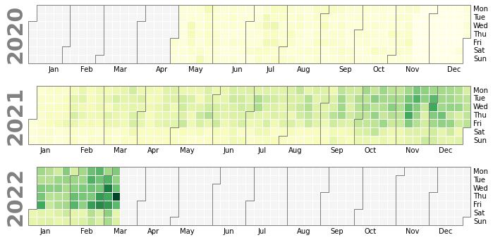
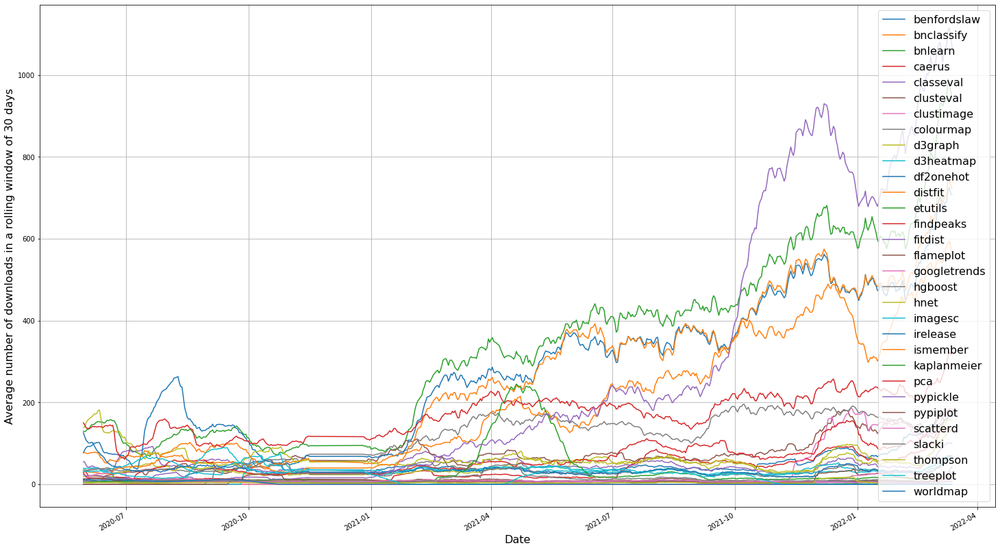
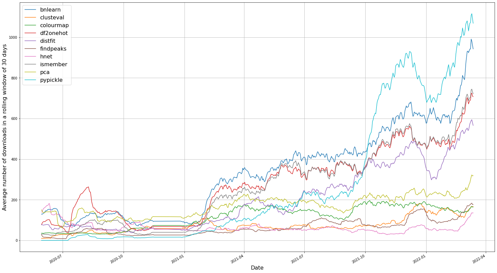
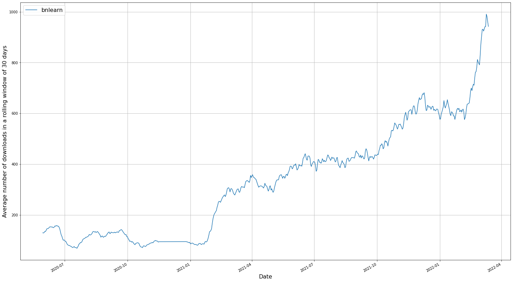
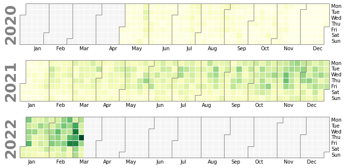

Update repos to disk
In the following example we download initialize with the username and download the counts from Pypi for the repos.
# Import library
from pypiplot import Pypiplot
# Download all data for github user.
pp = Pypiplot(username='erdogant')
# Update all repos
pp.update()
# Update specific repos
pp.update(repo=['bnlearn','hnet'])
Download Statistics
Download the statistics from pypi and store on disk.
# Import library
from pypiplot import Pypiplot
# Download all data for github user.
pp = Pypiplot(username='erdogant')
# Get total stats across all repos
results = pp.stats()
# [pypiplot] >Retrieve files from disk..
# [pypiplot] >Computing heatmap across the last 360 days.
# Get some stats
results = pp.stats(repo=['distfit','pca','bnlearn'])
print(results.keys())
# ['data', 'heatmap', 'n_libraries', 'repos']
# Print data
print(results['data'])
# bnlearn distfit pca
# date
# 2020-05-01 100.0 18.0 281.0
# 2020-05-02 6.0 4.0 260.0
# 2020-05-03 50.0 16.0 126.0
# 2020-05-04 82.0 64.0 86.0
# 2020-05-05 64.0 157.0 50.0
# ... ... ...
# 2020-09-11 148.0 213.0 78.0
# 2020-09-12 96.0 102.0 144.0
# 2020-09-13 12.0 42.0 197.0
# 2020-09-14 156.0 92.0 244.0
# 2020-09-15 40.0 76.0 225.0
Calender plot
Make calender plot with counts.
# Get stats for all repos
pp.stats()
# Plot calender
pp.plot_cal()
 |
Interactive Heatmap
Make heatmap with counts for the last year.
# Get stats for all repos
pp.stats()
# Plot calender
pp.plot_year()
Line plot
Make lineplot with counts.
# Get stats for all repos
pp.stats()
# Make line plot
pp.plot()
 |
Top 10 performing repos
Gather the top 10 top performing repos.
# Initialize with username
pp = Pypiplot(username='erdogant')
# Get download statistics
pp.stats()
# Get top 10
repo=pp.results['data'].sum().sort_values()[-10:].index.values
# Get stats for the top10
pp.stats(repo=repo)
# Plot
pp.plot()
 |
Analyze Specific repo
Here U will demonstrate how to gather stats and make plot for a specific repo.
# Initialize with username
pp = Pypiplot(username='erdogant')
# Get download statistics
results = pp.stats(repo='bnlearn')
# Plot
pp.plot()
pp.plot_cal()
pp.plot_year()
 |
 |
Interactive plot with all repos
Here U will demonstrate how to gather stats for all repos.
# Initialize with username
pp = Pypiplot(username='erdogant')
# Get total stats across all repos
results = pp.stats()
# Make plot
pp.plot_heatmap(vmin=10, vmax=2000, cmap='interpolateOranges', title='Total downloads across all repos')
Run pypiplot from terminal
* "-u", "--username" : username github
* "-l", "--library" : library name(s)
* "-p", "--path" : path name to store plot.
* "-v", "--vmin" : minimun value of the figure.
python pypiplot/pypiplot.py -u 'erdogant' -p 'C://pypi_heatmap.html' -v '700'